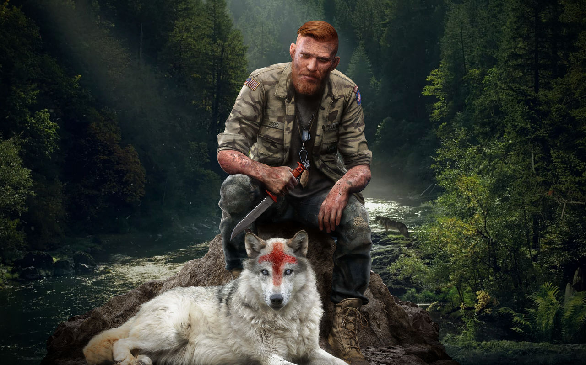
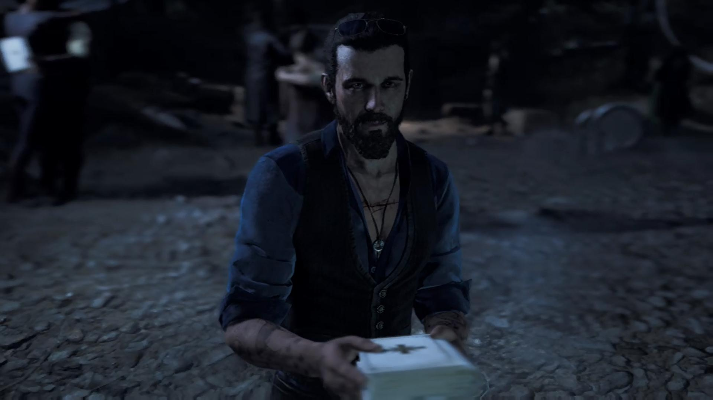

Far Cry 5 é um jogo de tiro em primeira pessoa onde o jogador enfrenta um culto religioso fanático em um mundo aberto no condado de Hope County, Montana. O objetivo é derrubar o líder do culto, Joseph Seed, e libertar a região do seu controle.
joseph Seed: conhecido como "o pai", é o líder carismático do culto "eden's gate", buscando impor sua visão do mundo a qualquer custo. Ele acredita que está cumprindo a vontade de Deus ao tentar salvar as pessoas do "fim dos tempos" através do culto.
Jacob Seed: um dos irmãos de Joseph, responsável pelo treinamento militar dos seguidores do culto, transformando-os em uma força paramilitar implacável sendo brutal e calculista em sua abordagem.
Faith Seed: Também conhecida como "A sereia", manipula os seguidores através de uma droga alucinógena, exercendo grande influência sobre eles. Faith é retratada como uma figura misteriosa e sedutora.
John Seed: o irmão mais novo de Joseph, encarregado das operações econômicas do culto, usando métodos violentos para garantir a lealdade à família seed. John é conhecido por sua crueldade e brutalidade.
